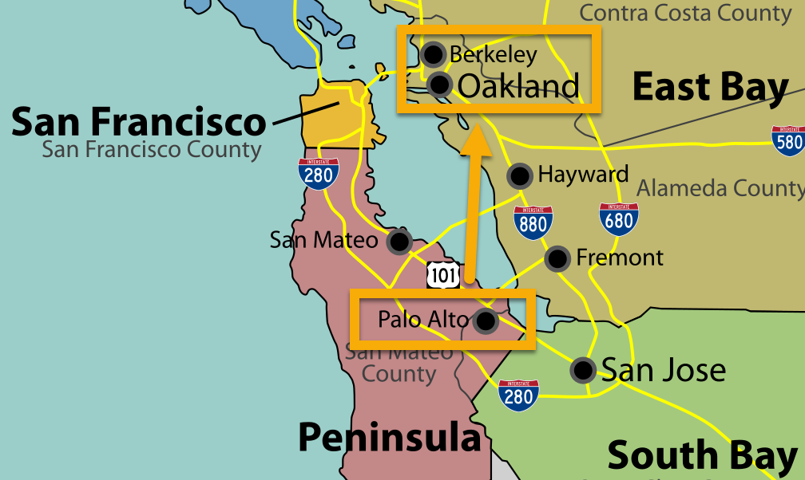

cb_palette = [
"#E69F00", "#56B4E9", "#009E73",
"#F0E442", "#0072B2", "#D55E00",
"#CC79A7"
]Week 1: From a Science of Particles to a Science of People
DSAN 5650: Causal Inference for Computational Social Science
Summer 2025, Georgetown University
Class Sessions
Schedule
Today’s Planned Schedule:
| Start | End | Topic | |
|---|---|---|---|
| Lecture | 6:30pm | 6:45pm | Quick Hello Hi Everyone Style Intro → |
| 6:45pm | 7:00pm | The Science \(\rightarrow\) Social Science “Phase Transition” → | |
| 7:00pm | 7:25pm | Motivating Examples I: Social Science → | |
| 7:25pm | 7:50pm | Motivating Examples II: Causal Inference → | |
| Break! | 7:50pm | 8:00pm | |
| 8:00pm | 8:30pm | Ulysses and the [Computational] Sirens → | |
| 8:30pm | 9:00pm | Course Logistics → |
Who Am I? Why Is Georgetown Having Me Teach This?
\[ \DeclareMathOperator*{\argmax}{argmax} \DeclareMathOperator*{\argmin}{argmin} \newcommand{\bigexp}[1]{\exp\mkern-4mu\left[ #1 \right]} \newcommand{\bigexpect}[1]{\mathbb{E}\mkern-4mu \left[ #1 \right]} \newcommand{\definedas}{\overset{\small\text{def}}{=}} \newcommand{\definedalign}{\overset{\phantom{\text{defn}}}{=}} \newcommand{\eqeventual}{\overset{\text{eventually}}{=}} \newcommand{\Err}{\text{Err}} \newcommand{\expect}[1]{\mathbb{E}[#1]} \newcommand{\expectsq}[1]{\mathbb{E}^2[#1]} \newcommand{\fw}[1]{\texttt{#1}} \newcommand{\given}{\mid} \newcommand{\green}[1]{\color{green}{#1}} \newcommand{\heads}{\outcome{heads}} \newcommand{\iid}{\overset{\text{\small{iid}}}{\sim}} \newcommand{\lik}{\mathcal{L}} \newcommand{\loglik}{\ell} \DeclareMathOperator*{\maximize}{maximize} \DeclareMathOperator*{\minimize}{minimize} \newcommand{\mle}{\textsf{ML}} \newcommand{\nimplies}{\;\not\!\!\!\!\implies} \newcommand{\orange}[1]{\color{orange}{#1}} \newcommand{\outcome}[1]{\textsf{#1}} \newcommand{\param}[1]{{\color{purple} #1}} \newcommand{\pgsamplespace}{\{\green{1},\green{2},\green{3},\purp{4},\purp{5},\purp{6}\}} \newcommand{\prob}[1]{P\left( #1 \right)} \newcommand{\purp}[1]{\color{purple}{#1}} \newcommand{\sign}{\text{Sign}} \newcommand{\spacecap}{\; \cap \;} \newcommand{\spacewedge}{\; \wedge \;} \newcommand{\tails}{\outcome{tails}} \newcommand{\Var}[1]{\text{Var}[#1]} \newcommand{\bigVar}[1]{\text{Var}\mkern-4mu \left[ #1 \right]} \]
Prof. Jeff Introduction!
- Born in NW DC → high school in Rockville, MD
- University of Maryland: Computer Science, Math, Econ

The World Outside of DC
Studied abroad in Beijing (Peking University/北大) → internship with Huawei in Hong Kong (HKUST)

Stanford, MS in Computer Science
Research Economist, UC Berkeley
Columbia, PhD in Political Economy
Dissertation (NLP x History)
“Our Word is Our Weapon”: Text-Analyzing Wars of Ideas from the French Revolution to the First Intifada
Wars of Ideas: Cold War
- Cold War arms shipments (SIPRI) vs. propaganda (–ü–µ—á–∞—Ç—å –°–°–°–†): here, to üá™üáπ

Wars of Ideas: First Intifada
Researching Things
- Most cited paper: “Monopsony in Online Labor Markets” (Uses Double-Debiased ML for Causal Inference!)
- Most recent paper: “Operationalizing Freedom as Non-Domination in the Labor Market” (Cambridge U Press)
- Rarely cited paper but often-thought-about obsession: “How To Do Things With Translations”
- Related thing you can buy in a bookstore: [Editorial board for new translation of] Capital, Vol. 1 by Karl Marx (Princeton U Press)
Motivation II: Causal Inference
Data-Generating Processes (DGPs)
The fundamental building block for the course is the idea of a Data-Generating Process (DGP). You may have encountered this concept in passing during other DSAN courses (for example, in DSAN 5100, a phrase like “Assume \(X\) is drawn i.i.d. from a Normal distribution with mean \(\mu\) and variance \(\sigma^2\)” is a statement characterizing the DGP of a Random Variable \(X\)), but in this course we will “zoom in” on this concept rather than treating it like a black box or a footnote to e.g. a theorem like the Law of Large Numbers.
This deep dive into DGPs is necessary for us here, since our goal in the course is to move from associational statements like “an increase of \(X\) by one unit is associated with an increase of \(Y\) by \(\beta\) units” to causal statements like “increasing \(X\) by one unit causes \(Y\) to increase by \(\beta\) units”. As you’ll see in Week 1, the tools from probability theory and statistics that you learned in DSAN 5100—Random Variables, Cumulative Distribution Functions, Conditional Probability, and so on—are necessary but not sufficient to analyze data from a causal perspective.
For example, if we use our tools from DSAN 5000 and DSAN 5100 on some dataset to discover that:
- The probability that some event \(E_1\) occurs is \(\Pr(E_1) = 0.5\), and
- The probability that \(E_1\) occurs conditional on another event \(E_0\) occurring is \(\Pr(E_1 \mid E_0) = 0.75\),
we unfortunately cannot infer from these two pieces of information that the occurrence of \(E_0\) causes an increase in the likelihood of \(E_1\) occurring.
This issue (that conditional probabilities could not be interpreted causally) at first represented a kind of dead end for scientists interested in employing probability theory to study causal relationships… In recent decades, however, researchers have built up what amounts to an additional “layer” of modeling tools which augment the existing machinery of probability theory to address causality head-on!1
For instance, a modeling approach called “\(\textsf{do}\)-Calculus”, that we will learn in this class, extends the core operations and definitions of probability theory to allow such an move to deriving causality! It does this by introducing a \(\textsf{do}(\cdot)\) operator that can be applied to Random Variables like \(X\), with e.g. \(\textsf{do}(X = 5)\) representing the event wherein someone has intervened in a Data-Generating Process to force the value of \(X\) to be 5.
With this operator in hand (that is, used alongside an explicit model of a DGP satisfying a set of underlying axioms which are slightly more strict than the axioms of probability theory), it turns out that we can make causal inferences using a very similar pair of facts! If we know that:
- The probability that some event \(E_1\) occurs is \(\Pr(E_1) = 0.5\), and
- The probability that \(E_1\) occurs conditional on the event \(\textsf{do}(E_0)\) occurring is \(\Pr(E_1 \mid \textsf{do}(E_0)) = 0.75\),
now we can actually draw the inference that the occurrence of \(E_0\) caused an increase in the likelihood of \(E_1\) occurring!
This stylized comparison (between what’s possible using “core” probability theory and what’s possible when we augment it with additional causal modeling tools) serves as our basic motivation for the course, so that from Week 2 onwards we build upon this foundation to reach the three learning goals described in the next section!
Course Logistics
Meta-Logistics: Spaced Repetition
Meta-Logistics: Maria Montessori and Your Final Projects
Your Final Projects
JupyterHub
Assignments / Midterm
References
Pearl, Judea. 2000. Causality: Models, Reasoning, and Inference. Cambridge University Press.